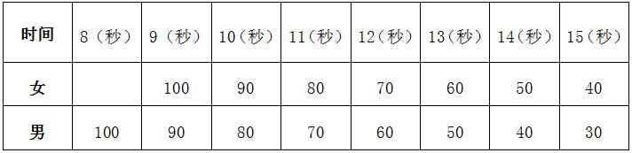

课程管理
|
课程名称 |
公共体育--足球（Ⅱ） |
课程代码 |
TX031091 |
|
课程类型 |
√通识课 □学科（专业）基础课 □专业发展课 |
课程性质 |
√必修课 □选修课 |
|
开课单位 |
体育学院 |
适用专业 |
非体育专业 |
|
总学时数 |
36 |
周学时数 |
2 |
|
课程学分 |
1 |
编 写 人 |
彭杰峰 |
|
编写时间 |
2017.07.20 |
审 批 人 |
刘其龙 |
一、教学目的
通过公共体育足球选项课教学，使学生具备一定的足球基本技术, 了解足球发展的历史和最新的足球竞赛规则。并达到如下目标： （一）基本了解足球发展概况，掌握足球的基本技术，教养学生对足球兴趣。 （二）提高足球的基本技术，提高学足球战术意识，身体素质得到加强。 （三）基本掌握几种战术配合，了解足球战术，基本掌握足球裁判法，提高足球欣赏水平。
二、重点与难点
（一）重点：足球竞赛规则与裁判法；足球基本技术；足球基本战术。
（二）难点：足球战术的运用。
三、基本内容与要求
理论部分
第1章 足球竞赛规则与裁判法简介
1.1 足球竞赛工作
1.2 足球竞赛规则分析
1.3 足球裁判法简介
（一）教学目的：使学生基本了解足球运动竞赛与裁判工作。
（二）重点与难点：足球竞赛工作；足球竞赛规则分析；足球裁判法简介。
（三）基本内容：介绍足球竞赛制度和编排方法，并对足球竞赛规则的重点内容和裁判工作方法进行了简要分析。
技术部分：
第2章 足球基本技术
2.1 足球技术的基本概念及其分类
2.2 运球与运球过人技术
2.3 踢球技术
2.4 接球技术
2.5 头顶球技术
2.6 抢断球技术
2.7 掷界外球技术
2.8 守门员技术
第3章 足球基本战术及运用
3.1 足球攻防战术原则
3.2 进攻战术
3.3 防守战术
3.4 定位球战术
（一）教学目的：使学生基本了解足球战术理论原则，掌握进攻战术、防守战术及定位球战术。
（二）重点与难点：足球的战术意识和攻防战术原则，个人攻防战术行动准则。
（三）基本内容：现代足球比赛的攻防战术原则；讨论如何更好地创造和利用比赛的时间和空间，并根据足球比赛的攻防规律对足球攻防战术原则进行总结与概括。
第4章 足球教学比赛
教学比赛应贯穿在技、战术教学的过程中根据技、战术学习的情况在比赛中提出要求讲解分析足球技、战术在比赛中的运用。
（一）教学目的：使学生能够把学到的技术动作合理的运用到比赛当中。
（二）重点与难点: 足球技战术的合理运用。
（三）基本内容：足球战术的运用；足球教学比赛。
第5章 身体素质——中长跑
5.1 起跑和起跑后的加速
5.2 途中跑、终点跑
5.3 中长跑的呼吸
5.4 全程跑：1000米（男生）、800米（女生）
（一）教学目的：通过教学使学生掌握起跑和起跑后的加速、途中跑、终点跑等中长跑的基本技术，学会正确的呼吸方式，发展耐力素质，进一步增强心肺功能。
（二）重点与难点：途中跑技术；中长跑的呼吸。
（三）基本内容：起跑和起跑后的加速、途中跑、终点跑等基本技术；全程跑。
四、授课内容学时分配
|
章目 |
内 容 |
学时 |
|
一 |
足球竞赛规则与裁判法简介 |
4 |
|
二 |
足球基本技术 |
14 |
|
1 |
运球技术 |
6 |
|
2 |
运球过人技术 |
1 |
|
3 |
踢球技术 |
2 |
|
4 |
接球技术 |
1 |
|
5 |
头顶球技术 |
1 |
|
6 |
抢球与断球技术 |
1 |
|
7 |
界外球技术 |
1 |
|
8 |
守门员技术 |
1 |
|
三 |
足球基本战术及运用 |
8 |
|
四 |
足球教学比赛 |
4 |
|
五 |
身体素质——中长跑 |
4 |
|
六 |
考试 |
2 |
|
合计 |
36 |
|
|---|---|---|
五、成绩考核：
（一）考核方式：现场测试。
综合成绩＝平时成绩×30%＋考试成绩×70%，考试成绩＝专项成绩×70%＋身体素质成绩×30%。 每一部分都有定量或定性的评分标准，其中身体素质为每学期的必考项目，身体素质考试内容为男子1000米、女子800米。 根据评分标准计算学期体育课程成绩，成绩按五级制，分为优秀、良好、中等、及格、不及格， 90分以上为优秀，80分-89分为良好，70分-79分为中等，60分-69分为及格，60分以下为不及格。
（二）考试内容：运球过杆射门、身体素质（男子1000米、女子800米）。
（三）评分标准：
1.运球过杆射门：
（1）射门方法：用单或双脚运球射门、计时。从罚球区线开始，直线纵向球门排列八个标志物，分别间隔2米，距第一标志物2米，设一横线，每人3次机会，取最好成绩。
（2）计分方法：①运球者一触球便开始计时，球越过球门线时停表。 ②射门不中或运球漏杆者无成绩，射中门柱者可补测一次。
（3）评分标准：
3.身体素质（男子1000米、女子800米）：评分标准见表1。
六、教材与参考书目
（一）使用教材：
[1] 王崇喜. 球类运动——足球 (第二版). 北京:高等教育出版社,2009.6.
（二）参考书目：
[1] 时卫东. 现代足球教学与训练游戏. 北京:中国科学技术出版社,2004.
[2] 中国足球协会.足球竞赛规则. 北京:人民体育出版社,2005.
[3] 麻雪田. 现代足球运动高级教程. 北京:高等教育出版社,2002.
表1 身体素质考核评分标准

注：数据来源于国家学生体质健康标准（2014年修订）。